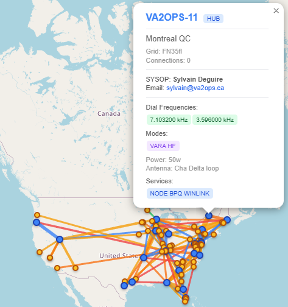

Première station hub canadienne sur The Packet Radio RF Forwarding Network (TPRFN). Un nœud BBS 24/7 offrant RMS Winlink, babillard électronique, chat en temps réel, météo et nouvelles — le tout par radio HF, aucun internet requis.
Le serveur BBS VA2OPS est un nœud radio par paquets à service complet opérant 24 heures sur 24 en HF. Il sert de station hub sur le réseau TPRFN — un réseau croissant de stations radioamateur qui acheminent les données par paquets exclusivement par RF, sans recourir à des liens internet (AXIP).
En tant que premier hub canadien sur le réseau, VA2OPS étend la couverture TPRFN au Canada, fournissant un point relais pour la messagerie store-and-forward, le chat clavier à clavier, les bulletins météo et les nouvelles à travers le réseau.
La station opère 24/7 en utilisant le modem VARA HF, changeant de bande selon les conditions de propagation :
| Bande | Fréquence | Horaire | Modem |
|---|---|---|---|
| 40 mètres | 7.103,2 kHz | Jour | VARA HF |
| 80 mètres | 3.596 kHz | Nuit | VARA HF |
The Packet Radio RF Forwarding Network (TPRFN) est un réseau de stations radioamateur qui connecte les systèmes radio par paquets en utilisant les bandes HF et des modes numériques modernes comme VARA HF. Le réseau privilégie les liens NVIS (Near Vertical Incidence Skywave) pour une communication fiable, uniquement par RF — aucune infrastructure internet.
Le TPRFN fournit une infrastructure de communications numériques résiliente qui fonctionne quand les réseaux traditionnels sont indisponibles. Il supporte la messagerie store-and-forward, le chat interactif, le routage intelligent et la transmission de fichiers numériques entre les stations du réseau.

Pour vous connecter au BBS VA2OPS, vous avez besoin d'un modem VARA HF et d'un logiciel client de paquets. Syntonisez la fréquence appropriée selon l'heure de la journée et connectez-vous avec votre logiciel de paquets préféré. Pour les guides de configuration et les détails sur comment rejoindre le réseau TPRFN, visitez le site web du TPRFN.